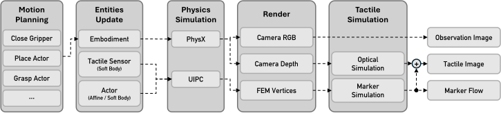

模型架构：从触觉融合到力觉世界模型
触觉融合架构 / 触觉基座模型 / 力觉世界模型 (FWM) / 数据飞轮与 Scaling Law / 闭环构建路径
摘要: 触觉模态如何从"有用但难用"走向"即插即用"？本文覆盖两个层次的问题。第一层：触觉如何接入现有模型——四种融合架构（Token 级/FiLM 调制/蒸馏/潜空间想象）各有取舍，三类触觉基座模型（Sparsh/UniTouch/UniVTAC）定义了表征学习的现状。第二层：为什么需要在力觉空间做世界模型——截至 2026 Q1，12+ 篇世界模型论文全部在视觉空间做预测，零篇在力/触觉空间学习动态模型；触觉基座模型都只做编码不做预测。力觉世界模型 (FWM) 填补这个空白：力是因果关系的直接载体（牛顿第三定律），比视觉因果链更纯净。FWM 采用三频率分层架构、SSM (Mamba) 骨干、异构编码器+Gated Mixture 融合，以力觉下一步预测 (FNSP) 为自监督目标。截至 2026 Q1，唯一走通完整四阶段闭环（预训练→SFT→RL→在线学习）的系统是 PI pi0.6，其余方案均存在断点。
1. 触觉融合：四种架构与选型
触觉如何接入已有的视觉-语言-动作 (VLA) 模型？2026 年出现了四种不同路线，各自代表一种对触觉角色的理解。
Token 级融合 — VTAM (2026) 是最"正统"的多模态方案：触觉编码器将传感数据映射为与视觉/语言同维度的 token 序列，三种模态同等参与 Transformer 注意力。引入触觉正则化损失后超越 pi0.5 基线 80%。代价是需要从头预训练，且序列长度爆炸——视觉 30fps×256 patch = 7680 token/s，再加触觉 token 后 self-attention O(n²) 不可承受。适合从零训练新基座的团队。
FiLM 调制 — TacFiLM (2026) 走最务实的路：触觉编码器输出 γ（缩放）和 β（偏移），对冻结的 VLA 主干中间特征做仿射变换。仅训练 FiLM 层+触觉编码器，参数高效。这是已有 VLA 想快速加触觉的首选——不动主干，几天就能跑通。
触觉蒸馏 — HapticVLA (2026) 解决的是部署问题：训练时用视觉+触觉的 Teacher，蒸馏到只用视觉的 Student。VITaL 证明预训练加触觉后即使推理移除，USB 插拔成功率从 20% 升至 85%。部署零成本（无需触觉硬件），但蒸馏损失不可避免——精细力控仍需在线触觉。
潜空间触觉想象 — HTD (2026) 最有想象力：视觉观测通过 World Model Encoder 到潜空间，Touch Dreaming Module 在潜空间中预测触觉，策略基于潜空间+预测触觉做决策，成功率提升 +90.9%。本质是让模型学会"想象"触觉——碰之前就知道会是什么感觉。受限于世界模型保真度，但方向与 FWM 最接近。
为什么"一切 token 化"不合适
语言 ~10 token/s（高语义密度，离散符号），视觉 ~7680 token/s（高空间冗余），触觉 ~200-1000 Hz × 21-1024 维（低冗余但高时间分辨率）。三者的语义粒度不可比：语言单 token 有明确语义，视觉需多层 attention 涌现物体语义，触觉的语义载体是时序动态——滑动检测需 50ms+ 力变化序列，单帧 token 化丢失核心信息。强行对齐到同一 token 空间导致：21 维触觉被 7680 个视觉 token 淹没（softmax 后注意力趋近于零），语言 1Hz/视觉 30Hz/触觉 1000Hz 三个数量级的频率不可调和。Sparsh 的核心贡献不是 token 化，而是证明触觉数据可用 SSL 学到通用连续表征。更合理的方向是模态专用编码器+瓶颈融合/FiLM/Cross-Attention，或分频率异步处理。
| 场景 | 推荐方案 | 理由 |
|---|---|---|
| 已有 VLA，想快速加触觉 | TacFiLM | 冻结主干，仅训练 FiLM 层，参数高效 |
| 从零训练新基座 | VTAM | Token 级融合表达能力最强 |
| 部署端无触觉硬件 | HapticVLA | 蒸馏后推理不需触觉传感器 |
| 需要预测和规划 | HTD / FWM | 世界模型 + 触觉预测/想象 |
| 数据极少，需零样本 | UniTacHand + TacFiLM | 10min 标定 + 后训练接入 |
2. 触觉基座模型：表征学习的三条路线
触觉融合架构需要一个好的触觉编码器——但从零训练代价高昂。2024-2026 年三个团队独立定义了"触觉基座模型"的概念：用大规模 SSL 预训练得到通用触觉表征，下游任务直接复用。

Sparsh (Meta, Nature Machine Intelligence 2025) 是第一个系统性验证触觉 SSL 的工作。在 460K DIGIT 触觉图像上训练 ViT 编码器，对比了 DINO、IJEPA 和 MAE 三种 SSL 方法。核心发现：DINO 和 IJEPA 显著优于 MAE——因为触觉图像的信息集中在接触区域的几何纹理而非全局像素分布，DINO/IJEPA 的注意力机制天然聚焦局部。TacBench 6 个任务（抓取稳定性、表面分类、姿态估计等）验证了预训练表征的迁移性。Sparsh 的意义不仅是技术——它证明触觉数据存在可学的通用结构，为整个领域打开了"预训练+微调"范式。
UniTouch (ECCV 2024) 走了不同路线：不是纯触觉 SSL，而是触觉-视觉-语言对齐。用 CLIP 式对比学习将触觉、视觉和语言映射到同一嵌入空间，使触觉表征可以用语言检索（"粗糙的表面"→对应触觉向量）。优势是零样本跨模态迁移，劣势是对齐损失可能压缩触觉特有信息（如微小力变化）。

UniVTAC (2026) 解决数据瓶颈：真实触觉数据昂贵，那就用仿真造。基于 DiffTactile（可微分 FEM 触觉物理仿真）合成大量触觉图像，训练编码器后直接迁移真机。结果：仿真训练的编码器在真机上提升 17.1%（仿真评测）/ 25%（真机评测）。这验证了触觉领域的 sim-to-real 迁移是可行的——尽管力觉的 sim-to-real gap 可能比视觉更严重（摩擦、形变、材质弹性远比渲染难模拟）。
三个模型的共同局限：它们都只做编码——将触觉映射为表征向量——不建模动态转移函数 f(z_t, a_t)→z_{t+1}。换言之，它们能回答"现在摸到了什么"，不能回答"如果这样推，下一刻会摸到什么"。这个空白正是力觉世界模型要填补的。
3. 空白地带：为什么需要在力觉空间做世界模型
我们检索了 2024-2026 年 12+ 篇世界模型论文——LAWM（语言条件视觉 WM）、Cosmos（NVIDIA 视频生成 WM）、GWM（通用 WM）、iVideoGPT（交互式视频预测）、DreamPlan（视觉想象规划）、PlayWorld、EgoSim、NORA-1.5、AtomVLA、AdaWorldPolicy、SimDist、DIAL——无一例外全在视觉空间做下一步预测。与此同时，触觉基座模型（Sparsh/UniTouch/UniVTAC）都只做单帧编码，不建模动态转移。没有任何工作在力觉空间学习动态转移函数 f(F_t, a_t)→F_{t+1}。
力的因果链只有一步：施力 a → 环境形变 → 反作用力 F_{t+1}（牛顿第三定律，必然发生）。视觉的因果链则是多步：施力 a → 环境形变 → 光照反射 → 相机成像（间接、受遮挡/光照干扰）。这意味着力觉预测是比视频预测更纯净的自监督信号：因果性更强、无遮挡、信号密度高（一次接触产生数百 taxel 变化）、力突变直接指示任务进度（如 USB 插入到位→阻力骤变）。
设计目标：构建一个在力/触觉空间做动态预测的世界模型——接受异构传感器输入（磁编码器、压阻阵列、视觉触觉、IMU、力矩反馈、六维力传感器），预测给定动作后的力/触觉状态变化，以力觉预测作为自监督信号预训练，与语言和视觉协作服务下游操作任务。
4. FWM 架构：三频率分层与骨干选型
不同模态的时间频率跨越三个数量级（语言 ~1Hz vs 力觉 ~1000Hz），不可能在同一个模型中处理。FWM 按频率分三层：
与 ECHO 的区别：ECHO（HKUST/LimX, 2026）也做了频率分层（云端扩散模型+边侧 RL tracker），但其规划层没有力觉世界模型——规划纯粹基于视觉/语言，力觉仅在执行层被动使用。FWM 在规划层加入力觉预测能力，使规划可以"想象"接触力的变化。
编码器：模态专用而非统一 token 化
六种传感器的数据形态完全不同——磁编码器是 21-29D 向量@200Hz，压阻阵列是 32×32 力矩阵@100-500Hz，视觉触觉是 640×480 RGB@30Hz，IMU 是 6D@1000Hz。设计原则是模态专用编码器+统一瓶颈融合：磁编码器用 1D Causal Conv（4 层，捕捉关节协调模式，运动学链 hard mask 编码物理耦合）；压阻阵列用 2D Conv（空间）+ 1D Conv（时间），接触通常覆盖 <10% 面积故用 Sparse Conv 节省计算；视觉触觉直接复用 Sparsh ViT（冻结）——460K 图像已预训练好；IMU 用单层 Mamba block（1000Hz×100ms=100 步，SSM 源自 ODE 离散化天然匹配惯性传感器）；关节力矩和六维力传感器用轻量 1D Conv/MLP。
所有编码器输出统一投射到维度 d=128-256，通过 Gated Mixture 融合：各 z_i 经门控权重 g_i = σ(W·[z_all, task_emb]) 加权求和。选择 Gated Mixture 而非 Concat（维度爆炸 6×d）或 Cross-Attention（计算量 N²）的核心原因：维度不变，且自动处理缺失模态——门控权重对缺失传感器自动输出 ~0。这对应真实场景：有些机器人只有力传感器没有触觉阵列。
骨干选型：SSM 是 MVP 首选
FWM 核心是动态转移函数：给定 F_t、a_t 和可选 V_t，预测 F̂_{t+1}。SSM (Mamba) 源自连续 ODE 离散化（dx/dt = Ax + Bu），力觉系统本身是物理 ODE（弹簧-阻尼-质量），数学结构同构。Mamba 在 1D 长序列（音频 16kHz、DNA）已验证，线性复杂度 O(n) 使 200Hz×10s=2000 步可轻松处理，状态递推天然支持在线推理。
| 维度 | SSM (Mamba) | SSM+Transformer 混合 | Neural ODE |
|---|---|---|---|
| 序列效率 | O(n), 最优 | O(n) 主体 + O(k²) 偶发 | O(n×S), S=积分步数 |
| 物理匹配度 | 高 (ODE 离散化) | 中 | 最高 (连续时间) |
| 在线推理 | 最佳 (状态递推) | 好 | 差 (需数值积分) |
| 工程成熟度 | 高 (Mamba 2 开源) | 高 | 低 (adjoint 不稳定) |
| 参数量估计 | d=256, 4层 ≈ 15-20M | ≈ 30-40M | ~5-10M |
| 推荐 | MVP 首选 | 精度优先时升级 | 学术探索 |
开放问题：Mamba 在机器人控制领域零验证；SSM 固定大小隐状态可能丢失长程力觉模式（如磨损导致的摩擦系数漂移）。混合架构（Jamba 式，SSM:Transformer=7:1）可在验证 FWM 概念后探索。
5. 视觉-力觉关系与自监督预训练
力觉世界模型不能完全脱离视觉——在非接触阶段（趋近、撤退），力觉信号为零，需要视觉提供信息。二者如何协作是核心架构决策。
路线 A: 独立训练，推理时交互。VWM 和 FWM 各自独立预训练，规划时通过 Cross-Attention 交换信息。非接触阶段只激活 VWM，接触阶段两者共同激活。最务实——VWM 可直接复用 Cosmos/LAWM 等现有方案，问题可归因到视觉或力觉。风险是两个模型可能学到矛盾的物理（VWM 预测杯子没动，FWM 预测力已变化），需要一致性损失。
路线 B: 共享潜空间联合训练。视觉和力觉编码到同一个潜空间 z，世界模型在统一 z 上预测。信息融合最充分，物理一致性天然保障。但必须同时有视觉+力觉配对数据（远少于纯视觉数据），视觉 30Hz 和力觉 200Hz 在潜空间的频率对齐是未解问题。Dreamer (Hafner) 在单模态潜空间 WM 已成功，但未验证多模态联合训练。
路线 C: 力觉优先，视觉辅助。FWM 是唯一的世界模型，视觉仅通过 FiLM/Cross-Attention 作为条件输入。最简洁、最聚焦力觉因果优势。最大问题：非接触阶段力觉信号为零，模型退化。解决思路包括相态切换（力阈值判定接触/非接触）、虚拟力场（距离衰减使 F_t 永不为零）、本体感觉补充（关节角度和力矩即使无接触也有信号）。
建议：MVP 从路线 C 开始——在接触密集任务（插拔、装配）上验证 FWM 核心价值。验证成功后扩展到路线 A，引入独立 VWM 处理非接触阶段。路线 B 作为长期目标。
自监督预训练：力觉预测天然不需标注
这是 FWM 架构的核心优势。三个预训练目标：
力觉下一步预测 (FNSP)：L_FNSP = ||FWM(F_t, a_t, V_t) - F_{t+1}||²。机器人随机探索环境，收集 (F_t, a_t, F_{t+1}) 三元组——F_{t+1} 是真实传感器读数天然可获取，力反馈本身就是标签。与视频预测相比：因果纯度更高（直接因果 vs 多步间接），无遮挡，预测难度更低（d=128-256 维 vs 像素空间高维）。
跨传感器掩码预测 (FMP)：随机掩盖 1-2 种传感器输入（如遮住压阻阵列，从磁编码器+力矩预测），学习不同传感器间的物理耦合——关节角度变化+力矩→可预测接触力（F=J^T τ），接触力分布+关节角度→可预测滑动（库仑摩擦判据）。本质是在学习隐式的接触动力学方程。
力觉-视觉时间对比 (FVC)：对比损失，正样本为同一时刻 (F_t, V_t) 对，负样本为不同时刻/轨迹的 (F_t, V_j)。学习力觉-视觉关联，使视觉可作为 FWM 的有效条件输入。
联合预训练 L_total = λ₁·L_FNSP + λ₂·L_FMP + λ₃·L_FVC，推荐 λ₁=1.0, λ₂=0.5, λ₃=0.3——FNSP 为主（核心能力），FMP 为辅（传感器互补），FVC 最轻（跨模态对齐，不应喧宾夺主）。
6. 数据策略与 Scaling Law
数据采集协议：桌面放 10-20 个不同材质/形状物体，机器手执行随机动作（抓取/推/拍/滑动/插入），每次 5-30s，记录全传感器+视觉，不需要标注、不需要成功、不需要重置——一切交互都有价值。每小时 ~50 次×10s×200Hz ≈ 100K 力觉帧；100 小时 ≈ 10M 帧，对 20M 参数 FWM 够用。
仿真起步（路线 A）：用 DiffTactile（ICLR 2025，可微分 FEM 触觉仿真）和 UniVTAC 平台合成数据，自动获取精确物理量（接触力/法线/摩擦系数/接触面积），仿真数据近乎无限（100M+ 帧），少量真机 fine-tune 做域适应。关键风险：力觉 sim-to-real gap 可能比视觉更严重——真实接触动力学的摩擦、形变、材质弹性远比 FEM 近似复杂。缓解：域随机化（接触刚度 k∈[100,10000] N/m, 摩擦 μ∈[0.1,1.5]）+ adversarial domain adaptation。
真机优先（路线 B）：直接在真实 (F_t, a_t, F_{t+1}) 上训练，无 sim-to-real gap。FNSP 自监督不需标注，力觉数据低维不像视频需 PB 级数据，20M 参数 FWM 可能只需 10M 帧（~100 小时采集）即可收敛。瓶颈：单机 10-50 episodes/h，需 100-500 小时；传感器 100h 后漂移需更换/校准。加速方案：10 台 G1 并行→10-50 小时达标。
混合策略（推荐）：阶段 1 仿真大规模预训练（100M+ 帧），学到通用接触物理先验；阶段 2 真机小规模对齐（1M 帧, ~10 小时），冻结主干微调最后 2 层+残差网络；阶段 3 在线持续适应，力觉预测误差 ||F̂-F|| 直接作为更新信号。类似视觉的 ImageNet 预训练→下游 fine-tune 范式。
Scaling Law 与数据飞轮
视觉世界模型已经展现 scaling law（Cosmos 用 20M+ 视频帧、LAWM 用 100K+ 轨迹），但力觉领域的 scaling law 完全未知。关键问题：力觉数据的边际回报何时饱和？初步估计：力觉低维（d=128-256）、因果关系简单（牛顿定律），可能比视觉更早收敛——10M 帧可能已足够 20M 参数模型，而视觉 WM 的相同参数量需要 100M+ 帧。但接触动力学的混沌性（微小初始差异→截然不同结果）可能在长程预测上打破这一乐观估计。
数据飞轮设想：FWM 预测误差大的轨迹→优先回收→提升 FWM→产生更好策略→产生更多样数据→反馈 FWM。这与 pi0.6 的在线学习阶段类似，但以力觉预测误差而非任务奖励作为驱动信号。
7. 瓶颈分析与闭环构建路径
截至 2026 Q1，唯一走通完整四阶段闭环（预训练→SFT→RL→在线学习）的系统是 PI pi0.6。其余所有方案——无论 VLA、WAM、还是世界模型——均存在断点。
阶段 1 预训练：视觉侧已成熟（Octo 用 Open X-Embodiment 800K+ 轨迹，pi0 用互联网规模视觉-语言），力觉侧空白（无公开大规模力觉数据集，Sparsh 的 460K 图像仅限 DIGIT 单传感器）。瓶颈：多传感器力觉数据的标准化和规模化。
阶段 2 SFT（监督微调）：VLA 用少量真机 demo 微调（pi0.5 每任务约 50-100 episodes），力觉 SFT 需要同步采集力/触觉+视觉+动作的完整多模态 demo——硬件成本和采集复杂度大增。瓶颈：完整多模态遥操作系统（需同时采集 TAG 手套 200Hz 关节角+触觉+腕部六维力+视觉+动作指令）。
阶段 3 RL（强化学习）：pi0.6 用 RL 在真机上调优策略，但其 RL 奖励纯粹基于任务成功/失败的稀疏信号。FWM 的差异化在于：力觉预测误差 ||F̂-F|| 可作为密集的中间奖励信号（力预测越准→操作越稳→成功率越高），缓解 RL 的稀疏奖励问题。瓶颈：力觉奖励塑形是否真的加速 RL 收敛，未验证。
阶段 4 在线学习：部署后持续从真实交互中学习。pi0.6 实现了这一步，但没有力觉。FWM 的在线学习天然简单——每次真实交互都产生 (F_t, a_t, F_{t+1}) 三元组，FNSP 损失可以持续更新 FWM，无需额外标注。这是力觉自监督的最大优势：部署即训练。
构建路径建议
不要试图一步到位。分四期推进：(1) 编码器预训练——各传感器编码器独立预训练，人手戴 TAG 随意运动 2h 即可；(2) FWM 预训练——G1 随机探索 50h，FNSP+FMP 联合，单卡 RTX 4090；(3) 策略微调——50-100 次 USB 插拔示教，冻结 FWM 训练策略网络；(4) 在线适应——部署后 FWM 持续更新。
8. MVP 配置与成功标准
| 组件 | 选择 | 参数量 |
|---|---|---|
| 硬件 | Unitree G1 (Orin) + TAG 磁编码器手套 (21DoF, <1°, 200Hz) + 腕部六维力 + 腕部 RealSense | — |
| 任务 | USB 插拔——接触丰富、力觉签名清晰、有 VITaL 基线 (20%→85%) | — |
| 编码器 | 磁编码器 1D Conv 4层 + 力传感 MLP 3层 + Gated Mixture | ~0.65M |
| FWM 骨干 | Mamba, 4 layers, d=256 | ~15M |
| 策略网络 | MLP, 3 layers | ~1M |
| 总计 | ~17M |
训练计划：阶段 0 编码器预训练（1 天）→ 阶段 1 FWM 预训练（1 周，G1 随机探索 50h→5M 力觉帧）→ 阶段 2 策略微调（2-3 天，50-100 次 USB 插拔示教）→ 阶段 3 评测（50 次试验，对比纯视觉 DP / 视觉+力觉 DP / FWM rollout+tracker）。
成功标准：FWM 力觉预测 10 步 (50ms) 内误差 <10%；FWM 方案成功率 > 视觉+力觉 DP > 纯视觉 DP；新 USB 口（未见过）10 次尝试内适应。
最需要回答的三个实验
- FNSP 的预测 horizon：力觉状态在 N 步后预测误差如何增长？N=10 (50ms)? N=100 (500ms)?
- SSM vs MLP vs 2-layer Transformer：USB 插拔任务上哪种骨干力觉预测最准？
- FWM rollout vs 纯反应式策略：FWM 规划+tracker 执行 vs 纯 RL tracker，力控任务成功率差多少？
参考文献
- VTAM: Vision-Tactile-Action Multimodal Token Fusion. 2026.
- TacFiLM: Feature-wise Linear Modulation for Tactile Integration. 2026.
- HapticVLA: Tactile Distillation for VLA. 2026.
- HTD: Haptic Touch Dreaming in Latent Space. 2026.
- Higuera, C. et al. Sparsh: Self-supervised Touch Representations. Nature Machine Intelligence, 2025. arXiv:2410.24090.
- Yang, F. et al. UniTouch: Universal Tactile Representation. ECCV, 2024.
- Zhao, H. et al. UniVTAC: Unified Simulation Platform for Visuo-Tactile Manipulation. arXiv:2602.10093, 2026.
- Si, Z. & Yuan, W. DiffTactile: Differentiable Tactile Simulation. ICLR, 2025.
- VITaL: Visual-Tactile Pretraining. 2026.
- ECHO: Edge-Cloud Humanoid Control. HKUST/LimX, arXiv:2603.16188, 2026.
- Hafner, D. et al. Mastering Diverse Domains through World Models (Dreamer V3). 2023.
- Gu, A. & Dao, T. Mamba: Linear-Time Sequence Modeling with Selective State Spaces. 2023.
- AI21 Labs. Jamba: SSM-Transformer Hybrid. 2024.
- NVIDIA. Gated DeltaNet: SSM ≈ Linear Attention. 2024.
- Physical Intelligence. pi0.6: Full-Loop Robot Learning. 2026.
- NVIDIA. Cosmos: World Foundation Model. arXiv:2501.03575, 2025.
- TAG: Teleoperation with Magnetic Glove. arXiv:2603.28542, 2026.
- Bjorck, J. et al. GR00T N1: Foundation Model for Humanoid Robots. arXiv:2503.14734, 2025.